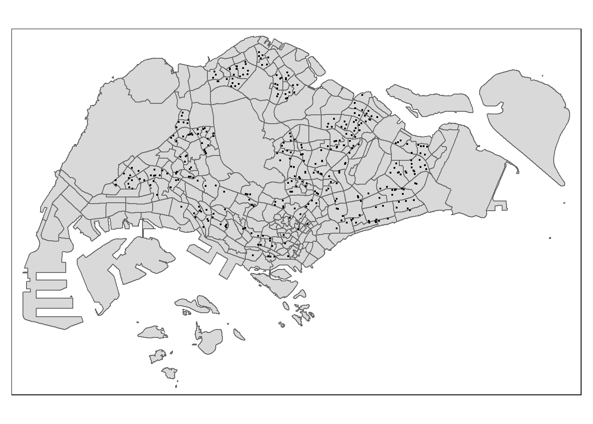

pacman::p_load(tmap, sf, httr, tidyverse)In class Exercise 4: Preparing Spatial Interaction Modelling Variables
Overview
In this in-class exercise, we will gain hands-on experience on the following tasks:
performing geocoding using data downloaded’ from data.gov.sg
calibrating Geographically Weighted Poisson Regression
Getting Started
To get start, the following R packages will be loaded into R environment. They are:
- tidyverse, provide a family of modern R packages for data import, wrangling
Counting number of schools in each URA Planning Subzone
Downloading General information of schools data from data.gov.sg
To get started, you are required to download General information of schools data set of School Directory and Information from data.gov.sg.
Geocoding using SLA API
Address geocoding, or simply geocodling, is the process of taking a aspatial description of a location, such as anaddress or postcode, and returing geographic coordinates, frequently latitude/longitude pair, to identify a location on the Earth’s surface.
Singapore Land Authority (SLA) supports an online geocoding service called OneMap APl. The Search AP1 lookslocation on the Earth’s surface.up the address data or6-digit postal code for an entered value. lt then returns both latitude, longitud’e and’ x,y coordinates of the searched location.
To get started, we are required to download General information of schools data set of School Directory andInformation from data.gov.sg.
Lastly, the found data table willjoined with the initial csv data table by using a unique identifier (i.e. POSTAL) common to both data tables, The output data table will then save as an csv file called found.
url <- "https://www.onemap.gov.sg/api/common/elastic/search"
csv <- read_csv("data/aspatial/Generalinformationofschools.csv")
postcodes <- csv$postal_code
found <- data.frame()
not_found <- data.frame()
for (postcode in postcodes) {
query <- list('searchVal'=postcode, 'returnGeom'='Y', 'getAddrDetails'='Y', 'pageNum'='1')
res <- GET(url, query=query)
if ((content(res)$found)!=0){
found <- rbind(found, data.frame(content(res))[4:13])
} else {
not_found = data.frame(postcode)
}
}Next, the code chunk below will be used to combine both foundand not found’data.frames into a single tibbledata.frame called merged. At the same time, we will write mergedand not found tibble data, frames into csv file format for subsequent used.
merged = merge(csv, found, by.x = 'postal_code', by.y = 'results.POSTAL',
all = TRUE)
write.csv(merged, file = "data/aspatial/schools.csv")
write.csv(not_found, file = "data/aspatial/not_found.csv")Tidying schools data.frame
In this sub-section, you will import schools.csv into R environment and at the same time tidying the data by selecting only the necessary fields as well as rename some fields.
schools <- read_csv("data/aspatial/schools.csv") %>%
rename(latitude = "results.LATITUDE",
longitude = "results.LONGITUDE")%>%
select(postal_code, school_name, latitude, longitude)New names:
Rows: 350 Columns: 41
── Column specification
──────────────────────────────────────────────────────── Delimiter: "," chr
(35): school_name, url_address, address, telephone_no, telephone_no_2, f... dbl
(6): ...1, postal_code, results.X, results.Y, results.LATITUDE, results...
ℹ Use `spec()` to retrieve the full column specification for this data. ℹ
Specify the column types or set `show_col_types = FALSE` to quiet this message.
• `` -> `...1`Converting an aspatial data into sf tibble data.frame
Next, you will convert the asptial data into a simple feature tibble data. frame called schools_sf.
Refer to st as sfl of sfpackage.
schools_sf <- st_as_sf(schools, coords = c("longitude", "latitude"), crs = st_crs(4326)) %>%
st_transform(crs = 3414)Plotting a point simple feature layer
To ensure that schoolssf tibble data.frame has been projected and converted correctly, you can plot theschools point data for visual inspection.
First, let us import MPSZ-2019 shapefile into R environment and save it as an sf tibble data.frame called mpsz.
mpsz <- st_read(dsn = "data/geospatial/",
layer = "MPSZ-2019") %>%
st_transform(crs = 3414)Reading layer `MPSZ-2019' from data source
`C:\cjh202311\isss624\In-class_Ex\In-class_Ex4\data\geospatial'
using driver `ESRI Shapefile'
Simple feature collection with 332 features and 6 fields
Geometry type: MULTIPOLYGON
Dimension: XY
Bounding box: xmin: 103.6057 ymin: 1.158699 xmax: 104.0885 ymax: 1.470775
Geodetic CRS: WGS 84Using the steps you learned in previous exercises, create a point symbol map showing the location of schools with OSM as the background map.
tmap_options(check.and.fix = TRUE)
tm_shape(mpsz) +
tm_polygons() +
tm_shape(schools_sf) +
tm_dots()Warning: The shape mpsz is invalid. See sf::st_is_valid
Performing point-in-polygon count process
Next, we will count the number of schools located inside the planning subzones.
mpsz$'SCHOOL_COUNT'<- lengths(
st_intersects(
mpsz, schools_sf))It is always a good practice to examine the summary statistics of the derived variable.
summary(mpsz$SCHOOL_COUNT) Min. 1st Qu. Median Mean 3rd Qu. Max.
0.000 0.000 0.000 1.054 2.000 12.000 The summary statistics above reveals that there are excessive 0 values in SCHOOL_COUNT field. If log() is going to use to transform this field, additional step is required to ensure that all 0 will be replaced with a value between 0 and 1 but not 0 neither 1.
Data Integration and Final Touch-up
business_sf <- st_read(dsn = "data/geospatial",
layer = "Business")Reading layer `Business' from data source
`C:\cjh202311\isss624\In-class_Ex\In-class_Ex4\data\geospatial'
using driver `ESRI Shapefile'
Simple feature collection with 6550 features and 3 fields
Geometry type: POINT
Dimension: XY
Bounding box: xmin: 3669.148 ymin: 25408.41 xmax: 47034.83 ymax: 50148.54
Projected CRS: SVY21 / Singapore TMtmap_options(check.and.fix = TRUE)
tm_shape(mpsz) +
tm_polygons() +
tm_shape(business_sf) +
tm_dots()Warning: The shape mpsz is invalid. See sf::st_is_valid
mpsz$`BUSINESS_COUNT`<- lengths(
st_intersects(
mpsz, business_sf))summary(mpsz$BUSINESS_COUNT) Min. 1st Qu. Median Mean 3rd Qu. Max.
0.00 0.00 2.00 19.73 13.00 307.00